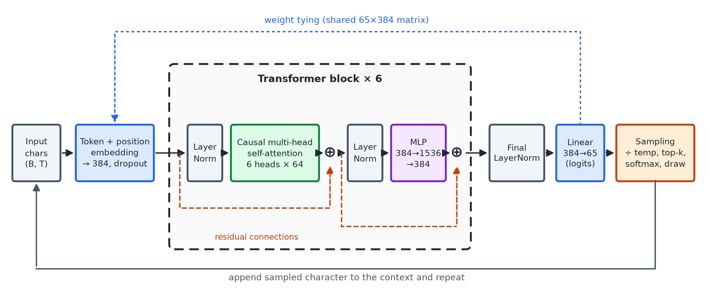
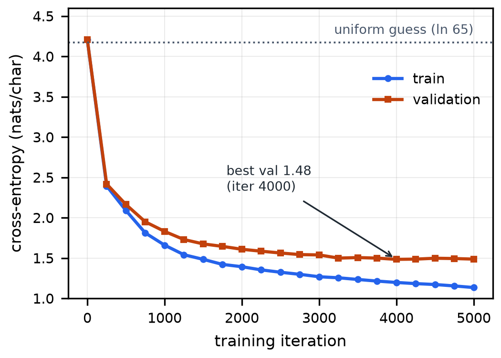

Transformer language models [1], [2] now underpin most text-generation systems, but their scale hides the mechanisms involved. A model small enough to train on a laptop in under half an hour exposes the full pipeline—tokenization, causal self-attention, optimization, sampling—to inspection and experiment. This paper documents such a model and evaluates it quantitatively. Our contributions are:
The transformer [1] replaced recurrence with self-attention; GPT-2 [2] showed that a decoder-only stack trained for next-token prediction scales to broad text generation. Our design follows the compact style of nanoGPT [3] and uses the Tiny Shakespeare corpus distributed with char-rnn [4]. Al-Rfou et al. [5] demonstrated that deep self-attention models operate effectively on characters; we use the same granularity for its tiny vocabulary. Individual components are standard: pre-layer normalization [6], [14], residual connections [15], GELU activations [8], weight tying between input and output embeddings [7], dropout [10], and the AdamW optimizer [9]. Generation uses temperature scaling with top-k truncation [11]; nucleus sampling [12] is a common alternative that we do not evaluate.
The model maps a sequence of character indices x1..T (T ≤ 256) to logits over a 65-symbol vocabulary. The input representation is the sum of a token embedding and a learned absolute position embedding, followed by dropout:
Each of the L = 6 blocks applies pre-LayerNorm self-attention and a feed-forward network, each wrapped in a residual connection:
Attention uses 6 heads of dimension 64. Queries, keys and values come from one fused linear layer (384→1152, no bias). Scores are scaled and masked so position t attends only to positions ≤ t:
where Mij = 0 for j ≤ i and −∞ otherwise. Dropout (0.2) is applied to the attention weights and the attention output. The MLP is 384→1536→384 with a GELU non-linearity and dropout on its output. A final LayerNorm precedes a linear layer that produces logits; this layer shares its weight matrix with the token embedding [7]:
Linear and embedding weights are initialized from N(0, 0.022) with zero biases. The model has 10,761,600 parameters; Table I shows where they reside. Because the vocabulary is only 65 symbols, the embeddings are negligible and 98.9% of the parameters are in the transformer blocks.
| Component | Parameters |
|---|---|
| Token embedding (tied with output layer) | 24,960 |
| Position embedding | 98,304 |
| Per block: attention (QKV + projection) | 589,824 |
| Per block: MLP | 1,181,568 |
| Per block: two LayerNorms | 1,536 |
| Block total (× 6 = 10,637,568) | 1,772,928 |
| Final LayerNorm | 768 |
| Total | 10,761,600 |

We use Tiny Shakespeare [4]: 1,115,394 characters with 65 distinct symbols, tokenized at the character level. The first 90% (1,003,854 characters) is used for training and the final 10% (111,540 characters) for validation; the split is contiguous and unshuffled, so validation text is a different stretch of the plays. The objective is cross-entropy on next-character prediction; targets are the inputs shifted by one position, so a 256-character window supplies 256 training examples.
Each step samples 32 random 256-character windows (8,192 tokens). We use AdamW [9] at a constant learning rate of 3×10−4 (default weight decay 0.01) with gradient-norm clipping at 1.0, and no warmup or decay schedule. Training ran for 5,000 steps, i.e. 40.96 M tokens or about 41 passes over the training split. Every 250 steps, validation loss was estimated on 50 random batches and the checkpoint was saved whenever this estimate improved. The random seed was fixed (1337). Table II lists the settings.
| Layers / heads / embedding | 6 / 6 / 384 |
| Context length | 256 characters |
| Dropout | 0.2 |
| Batch size | 32 × 256 tokens |
| Optimizer, learning rate | AdamW, 3×10−4 |
| Gradient clipping | 1.0 (norm) |
| Training steps | 5,000 |
| Hardware | Apple M1 Pro, 32 GB |
| Backend, precision | PyTorch 2.15 (MPS), fp32 |
| Wall-clock time | 1,640 s (≈0.33 s/step) |
Training loss fell from 4.20 at initialization—close to the uniform value ln 65 = 4.17—to 1.13 at step 5,000 (Fig. 2). The periodic validation estimate reached its minimum of 1.48 at step 4,000 and then drifted to 1.49, while training loss kept falling, a standard signature of overfitting after about 41 epochs. The checkpoint from step 4,000 was kept.
Because that estimate uses random batches, we re-evaluated the saved checkpoint on the entire validation split using non-overlapping 256-character windows (111,360 characters scored). Table III compares it with two baselines trained on the same split: a uniform distribution and a character-bigram model with add-one smoothing. TinyGPT reduces the loss by 40% relative to the bigram model; its perplexity of 4.47 means it is on average as uncertain as a uniform choice among about 4.5 characters.
| Model | nats/char | bits/char | Perplexity |
|---|---|---|---|
| Uniform | 4.174 | 6.022 | 65.00 |
| Bigram (add-one) | 2.482 | 3.581 | 11.96 |
| TinyGPT (this work) | 1.498 | 2.160 | 4.47 |

We generated 8 sequences of 1,000 characters at each temperature (top-k = 40, fixed seed) and measured (a) the share of generated words that occur in the training split and (b) the share of generated word tokens that are distinct. Table IV shows a clear trade-off: low temperature yields almost only valid words but heavily repeats them, while high temperature increases diversity at the cost of invented words. Note that validity can exceed the 94.3% of real held-out words found in the training vocabulary because low-temperature text over-uses very frequent words; the metric measures spelling, not grammaticality or meaning.
| Temperature | Words | In train vocab. | Distinct |
|---|---|---|---|
| 0.5 | 1,582 | 99.1% | 22.9% |
| 0.8 | 1,560 | 96.2% | 33.8% |
| 1.0 | 1,490 | 93.2% | 39.3% |
| 1.2 | 1,399 | 87.4% | 48.9% |
| Real held-out text | — | 94.3% | — |
At temperature 0.8 the model reproduces the corpus format—speaker labels, colons, line breaks and verse-like line lengths—and archaic vocabulary, but sentences are not coherent:
ROMEO: I think, there an extremest is my friends, For your fortune of battle persons, Being the bloody of the plague, That the advise of your own prayer,
At temperature 1.2, invented words appear:
I'll not dheed: As month I serve thee venom and cursed at the day? Ready copals the devil.
Chat. The model is a text continuer, not an instruction-following assistant. To make it interactive we frame the
conversation as a play script: the user’s message is appended as NAME:\n<message>\n\n followed by the bot
character’s label, and the model generates until it emits a blank line, which ends a speech in the training data. Memory is
limited by the 256-character context window, so earlier turns are quickly forgotten, and replies imitate the corpus rather than
answering questions.
Portability. The code selects CUDA, Apple MPS or CPU automatically. Windows batch files (and an equivalent shell script for macOS and Linux) create a virtual environment, install PyTorch (the CUDA build when an NVIDIA GPU is detected) and start chat, generation or training with a double-click; the trained checkpoint (44.6 MB) is distributed with the code so no training is required to run the model. The source code, checkpoint, training log and figure scripts are available at https://github.com/MouryaGowd/TinyLLM.
We built and trained a 10.76 M-parameter character-level GPT from scratch on a laptop in 27 minutes. It reaches 1.50 nats/character on held-out text, a 40% reduction in loss over a bigram baseline, and learns the format and vocabulary of its corpus while overfitting after about 40 epochs. Temperature experiments quantify the trade-off between valid words and diversity. Natural extensions are subword tokenization, a learning-rate schedule, a larger corpus, a held-out test set, and instruction fine-tuning to turn the text continuer into a dialogue system.
[1] A. Vaswani et al., “Attention is all you need,” in Advances in Neural Information Processing Systems 30, 2017.
[2] A. Radford, J. Wu, R. Child, D. Luan, D. Amodei, and I. Sutskever, “Language models are unsupervised multitask learners,” OpenAI, Tech. Rep., 2019.
[3] A. Karpathy, “nanoGPT,” GitHub repository, 2022. [Online]. Available: https://github.com/karpathy/nanoGPT
[4] A. Karpathy, “char-rnn (Tiny Shakespeare dataset),” GitHub repository, 2015. [Online]. Available: https://github.com/karpathy/char-rnn
[5] R. Al-Rfou, D. Choe, N. Constant, M. Guo, and L. Jones, “Character-level language modeling with deeper self-attention,” in Proc. AAAI Conf. Artificial Intelligence, 2019.
[6] R. Xiong et al., “On layer normalization in the transformer architecture,” in Proc. Int. Conf. Machine Learning (ICML), 2020.
[7] O. Press and L. Wolf, “Using the output embedding to improve language models,” in Proc. Conf. European Chapter of the ACL (EACL), 2017.
[8] D. Hendrycks and K. Gimpel, “Gaussian error linear units (GELUs),” arXiv:1606.08415, 2016.
[9] I. Loshchilov and F. Hutter, “Decoupled weight decay regularization,” in Proc. Int. Conf. Learning Representations (ICLR), 2019.
[10] N. Srivastava, G. Hinton, A. Krizhevsky, I. Sutskever, and R. Salakhutdinov, “Dropout: A simple way to prevent neural networks from overfitting,” J. Mach. Learn. Res., vol. 15, 2014.
[11] A. Fan, M. Lewis, and Y. Dauphin, “Hierarchical neural story generation,” in Proc. Annu. Meeting Assoc. Computational Linguistics (ACL), 2018.
[12] A. Holtzman, J. Buys, L. Du, M. Forbes, and Y. Choi, “The curious case of neural text degeneration,” in Proc. ICLR, 2020.
[13] A. Paszke et al., “PyTorch: An imperative style, high-performance deep learning library,” in Advances in Neural Information Processing Systems 32, 2019.
[14] J. L. Ba, J. R. Kiros, and G. E. Hinton, “Layer normalization,” arXiv:1607.06450, 2016.
[15] K. He, X. Zhang, S. Ren, and J. Sun, “Deep residual learning for image recognition,” in Proc. IEEE Conf. Computer Vision and Pattern Recognition (CVPR), 2016.